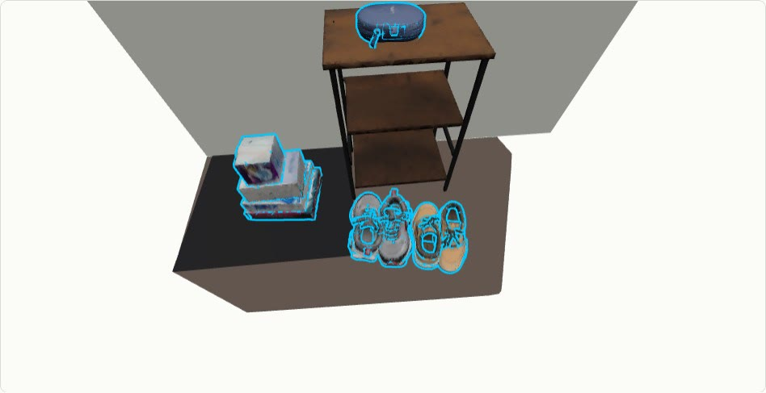

Bedroom
PokeBot rebuilt this scene from a phone scan. Each object in the tiles below is a PokeBot asset.
Phone scan
Rebuilt scene

PokeBot rebuilt this scene from a phone scan. Each object in the tiles below is a PokeBot asset.

 Grey shoe, left
Grey shoe, left